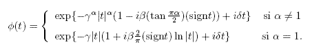

La variable aleatoria más importante que estudiamos durante nuestra carrera profesional es la Normal. Esta distribución modela conjuntos de datos que tienen forma de campana como son los errores en las mediciones de instrumentos, la calificación en exámenes, o fluctuaciones aleatorias. Además es la distribución base en la construcción de intervalos de confianza, pruebas de hipótesis, análisis de regresión, pronósticos, cartas de control, series de tiempo y casi todos los métodos estadísticos que utilizamos durante nuestros estudios profesionales.
La importancia de la distribución normal en la Inferencia Estadística reside en un famoso resultado conocido como el Teorema del Límite Central, el cual establece que el promedio de variables aleatorias independientes e idénticamente distribuidas (v.a.i.i.d) con media mu y varianza finita se aproxima en distribución a una variable normal, i.e.,
Resulta que en general las únicas distribuciones de este tipo son las distribuciones estables, i.e., los promedios estandarizados de v.a.i.i.d. se aproximan en distribución a una variable aleatoria estable. De lo anterior, queda claro que la Distribución Normal pertenece a la familia de las distribuciones estables. Otras distribuciones estables conocidas (por nombre) son la Distribución de Cauchy y la de Levy.
En genera no se conoce la función de densidad de una v.a. estable en forma cerrada. En su lugar se identifica a estas distribuciones a través de su función característica (compleja).

donde se identifica a la distribución a través de cuatro parámetros. El principal índice es alpha que identifica a la distribución, por ejemplo, alpha = 2 corresponde a la distribución Normal, alpha = 1 corresponde a la distribución de Cauchy y alpha = 0.5 corresponde a la distribución de Levy. El índice beta corresponde al sesgo de la distribución. Gamma representa un parámetro de escala, que no corresponde a la varianza o desviación estándar, ya que para alpha<2 ninguna distribución estable tiene varianza finita. Mu corresponde a un parámetro de la posición de la distribución, aquí para alpha>1 este parámetro representa la media de la distribución. La gráfica de abajo muestra como se comporta una distribución estable para diferentes valores de alpha. Esta gráfica se obtuvo con la función dstable disponible en el paquete estadístico R. Note que conforme se decrementa alpha la distribución de acumula en el centro y se levanta ligeramente en los extremos, es por esta razón que a estas distribuciones se les conoce como distribuciones de colas pesadas.
Densidad estable con sesgo cero, escala unitaria y localizaci�n cero. |
La representación de LePage de una v.a. estable fue dada por Raoul LePage, Michael Woodroofe y Joel Zinn en 1980. Ahora se le conoce a esta representación como Representación en Serie de una v.a. estable, y es útil para comprender el comportamiento complejo de estas distribuciones. Este resultado se obtuvo al buscar una demostración probabilística del TLC, ya que hasta entonces se conocía solamente la demostración de Análisis Complejo de Paul Levy que utiliza a la función característica.
La representación en serie de una variable estable simétrica con parámetro de escala unitario es la siguiente:
donde las variables Wi's son i.i.d. con momento alpha finito, las variable epsilon_i son independientes con distribución Rademacher, las variables Gamma_i son los tiempos de retorno de un proceso de Poisson y K(alpha,W1) es una constante.